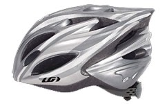
安 全 帽
銀色，大頭尺寸，戴起來還蠻輕的，每次騎車都被批評怎麼沒戴安全帽，
這次會乖一點戴在頭上，永保平安。重量 :297g
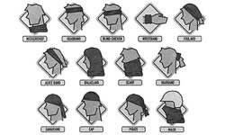
頭 巾
BUFF的魔術頭巾，平常就把頭包起來，檔太陽、防熱、清爽～
起風沙的時候還可以把整個臉也包起來。像搶匪一樣 XD
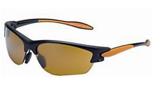
太 陽 眼 鏡
720 Armour
型號 : T209 UV抗紫外線 : 400
備片三組: 黃色 增光 透明
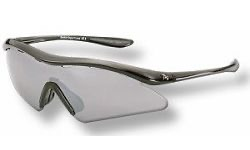
太 陽 眼 鏡
720 Armour
型號: T337 UV抗紫外線 : 400
備片三組: 灰水銀 黑色 增光
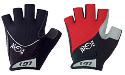
手 套
矽膠材質的短手套，帶著手套看起來很酷 XD 一雙黑色、一雙紅色。
騎長時間的話，手握著單車把手也不會那麼痛，還可以拿來擦汗。
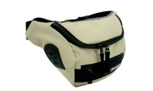
腰 包
貼身一點的行李，比如護照，要嘛就藏在行李的深處，要嘛就乾脆放在身上。
還有一些像是今日的生活費、糖果等東西，只要是希望隨手就能拿到，那都放這吧。
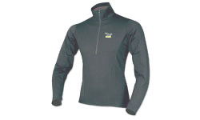
排 汗 衣
Salewa Power Stretch
材質: Polartec 顏色: 灰
還有兩件是厚的，淺咖啡色，是藍駝胡大哥跟北極徒步旅行家河野兵市的特別款。
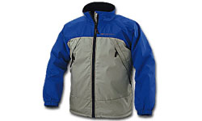
風 衣
Heritage Gore Windstopper
藍色款，防風防水輕薄好穿，胡大哥送的， 重量:280公克。
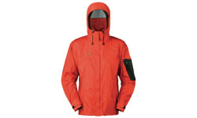
雨 衣
Epic Jacket
雨衣是MHW的番茄色款，透氣防水當然是基本的， 重量:380公克。
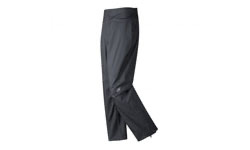
雨 褲
Cloudveil Zorro Pant
雨褲是Clouddevil的黑色款， 重量:241公克。
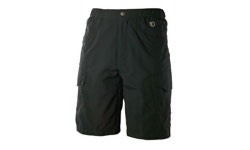
短 褲
不習慣穿車褲騎車，短褲休閒風格比較適合我啦
梨子牌，鐵灰色，長度快到膝蓋，穿起來很舒服 :D
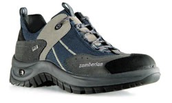
透氣鞋
Zamberlan 165 SEDONA LOW XCR
這次不穿卡鞋了，雖然騎起來比較輕鬆，但是騎久腳底板整個很痛 /_\
換一雙透氣舒適的鞋子，長時間騎車腳也不會臭唷。
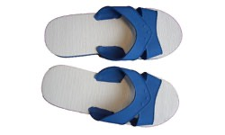
藍 白 拖
藍白拖鞋之於我的旅行，是很重要而不可或缺的行李，在菜市場即可輕易入手。
它有像是國旗一般的本土象徵意義，以及整雙都是PU泡綿舒適好穿的特性。
那種，『藍白拖在腳，世界任我行』的感覺，穿過就會知道。
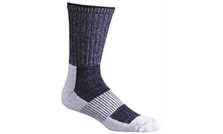
排 汗 襪
FoxRiver 排汗快乾襪
透氣舒適的襪子，帶了兩雙可以交替著穿。
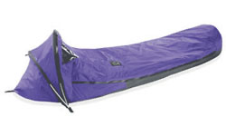
露 宿 帳
Mountain Hardwear Ethereal Bivy
採用Gore-Tex XCR材質 重量:790公克。
跟睡袋和睡墊結合就變成了溫暖的過夜處了~
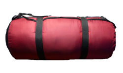
睡 袋
捷峰
羽絨睡袋 可耐寒零下20度。可以全部打開變成棉被。很暖活。
2005年我要去環法的時候 Albula送我的 現在終於要派上用場了
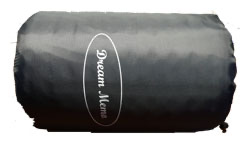
睡 墊
Dream Mema
如果睡在野地或是雪地的話。拿來鋪在地上能隔絕寒冷的侵襲。840公克。
這也是兩年前Albula送的
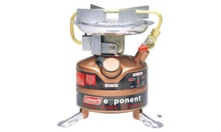
汽 化 爐
Coleman Exponent
型號: 422 重量: 680公克。汽油、去漬油兩用燃料。
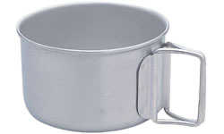
鍋 具
A&F country
因為是鈦金屬的鍋具，所以整個就是一個輕。同時也很貴~_~
容量大約是一公升，可以讓我燒點熱開水煮泡麵或是泡可可亞喝。
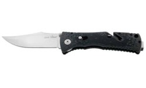
刀 具
刀與生活的崇淵送的一把折疊刀，，相當的漂亮，大小也符合我的手。
平常收起來的時候，還有一個設計可以拿來割繩子。 材質: AUS 8 重量: 102克
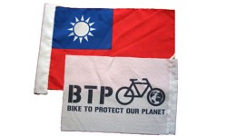
國 旗 + BTP 旗
國旗是一定要帶的，視情況拿出來掛著，這面國旗是機車連的學弟，退伍時從連上拿的。
另一面是BTP的活動旗幟，平常也可以掛著，宣導一下環保理念。
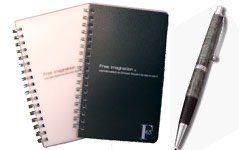
筆 、 筆記本
兩本65頁、36K的小筆記本，一黑一白，還有幾隻原子筆。
筆多帶幾隻，還可以送偏遠地區的人當禮物。
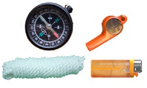
哨 子 、 繩 子 、打 火 機、指南針
你永遠不會知道什麼時候會用到這些東西，或是根本就不會用到。
但還是帶在身邊，以免需要的時候，叫天不應、地也不靈。
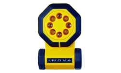
LED 手 電 筒
LED 多功能手電筒，可以閃光，強烈照明，緊急SOS訊號..等多種模式。
另附有帶子，可以掛於胸前或綁在車上、頭頂。
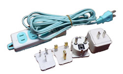
延 長 線 & 插 頭 轉 換 器
三個插座的延長線，和MSI送的一組插頭轉換器。
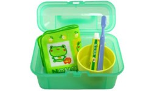
清 潔 、 盥 洗 用 品
快乾毛巾、肥皂、牙刷、牙膏、棉花棒、牙線、指甲刀、鑷子、鏡子。
這一張只是示意圖，我買不到那麼可愛的盥洗用品組合 ~_~
個 人 藥 品
感冒藥、腸胃藥、抗生素、小護士、眼藥水、OK繃、類固醇、咳嗽藥、口罩、
護唇膏、防曬噴霧、肌樂、維他命、紅藥水。多謝銘龍的醫生弟弟幫我配藥。
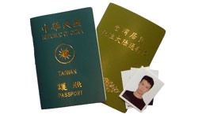
護 照 、 簽 證 、 照 片 、 文 件
台灣護照、台胞證、大頭照、緊急連絡人名單
哈薩克簽證、俄羅斯簽證、波蘭簽證、歐盟申根簽證。影本全部各一份。
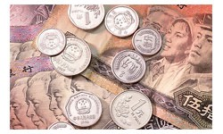
人 民 幣 、 信 用 卡 、 提 款 卡
現金只會攜帶人民幣，然後和信用卡以及提款卡混著使用。
旅行支票是個很麻煩的東西，很掙扎要不要買 ~_~
旅 遊 平 安 險
安泰人壽 2000萬旅遊平安險 OTA + OHS + MR
保險的規模還蠻大的，不僅理賠金額高、天數長（180天），而且還包含了
海外醫療、海外急難救助、而且保險證明對於辦簽證還挺有幫助。
疫 苗
現在血液裡留著好幾種出發前去馬偕醫院注射的疫苗，包含：
狂犬病、A型肝炎、腦脊髓膜炎
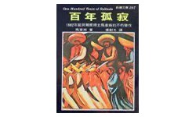
書 籍
旅行帶本書，雖然顯得笨重，但實用性遠遠超乎想像。
一個人在他鄉，可以帶一本自己喜歡的書，任何時候都可以投入書中，換一個心情。
這次帶的是新潮文庫的百年孤寂，大概四年前看完過一次，真是本超好看的書！
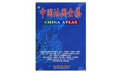
地 圖
大輿出版社的中國地圖，共160頁，有省為單位的大地圖，也有主要城市的市區地圖。
除了地圖之外，也有詳細的文字資料，包含人文、地形、天候、景點等資料。
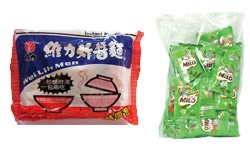
乾 糧
氣化爐跟鍋子都帶了，那要煮些什麼呢？
這次會帶基本的像是維力炸醬麵和雀巢美祿三合一。
燒點開水就可以自己煮點東西或泡杯可可來喝。其他糧食就路上再邊買邊吃。
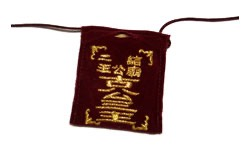
平 安 符
我阿姨幫我去二結王公廟求的平安符 :)
我會平平安安回來的。
心
雖然是老梗了，但是！
只要有心，人人都可以是.......